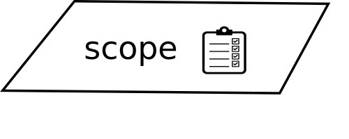

Veille technologique
-
Definition
-
Objectifs de la veille technologique
-
Ressources
La veille technologique ou veille scientifique et technique consiste à s'informer de façon systématique sur les techniques les plus récentes et surtout sur leur mise à disposition commerciale (ce qui constitue la différence entre la technique et la technologie).
Cette activité met en œuvre des techniques d'acquisition, de stockage et d'analyse d'informations et leur distribution automatique aux différentes sections concernées de l'entreprise, à la manière d'une revue de presse. Ces informations peuvent concerner une matière première,
un produit, un composant, un procédé, l'état de l'art et l'évolution de l'environnement scientifique, technique, industriel ou commercial de l'entreprise. Elle permet aux bureaux d'études d'être informés des baisses possibles de coût ou d'augmentation de qualité dans le cadre de l'analyse de la valeur.
L'entité de production connaît mieux grâce à elle ses limites de production et sa concurrence future.
Pour résumer les objectifs de la veille technologique, celle-ci permet d’apporter une aide aux décisions stratégiques de l’entreprise via la recherche d’informations utiles et la demande de signaux faibles.
Pour les spécialistes de l’ENSAM, la base de la veille technologique en termes de produits tourne autour de quatre pôles:
1er pôle : “benchmark”, basé sur l’analyse de la concurrence. Cette analyse consiste à identifier les potentiels concurrents, à évaluer leurs produits et à analyser leurs stratégies et pôles de développement pour qu’ils ne puissent pas prendre par surprise.
2ème pôle : “technologique” qui évalue les technologies de pointe actuelles en analysant leurs conditions d’accès, leurs rythmes de croissance et leurs potentielles progressions dans le futur
3ème pôle : “stratégie” qui évalue la stratégie de l’entreprise et chacun de ses secteurs / départements. À partir d’une étude analytique poussée des stratégies des concurrents, celle-ci permet de dégager des entreprises agissant avec des stratégies ou méthodes comparables
4ème pôle : “produit” qui se doit de se renseigner sur de potentiels futurs produits dans leur plus-value et fonction.


-
Definition
-
UX design
Expérience Utilisateur (UX)
Défini d'après la norme ISO 9241-210 comme les réponses aux perceptions d'une personne qui résultent de l'usage ou de l'anticipation de l'usage d'un produit, d'un service ou d'un système.
L’expérience utilisateur, aussi appelé User Expérience en anglais (abréviation : UX) est définie
par « la conséquence de l’état intérieur d’un utilisateur (prédisposition, attentes, besoin, motivations,
humeur, etc.), les caractéristiques du système conçu (c’est à dire complexité, objectif, utilisabilité,
fonctionnalité, etc.) et le contexte (ou l’environnement) dans lequel l’interaction a lieu (c’est à dire
contexte organisationnel/social, l’utilité de l’activité, la volonté de l’utilisation, etc.) »
En résumé, le but de l’expérience utilisateur est de proposer à l’utilisateur au-delà de la fonctionnalité, une émotion qui sera ressentie au moment de l’utilisation de cette fonctionnalité. L’expérience
utilisateur, ce n’est donc pas seulement une question d’esthétique, dans le sens ou l’utilisateur trouverait l’objet agréable à regarder, ni une simple question de fonctionnalité. Ce serait de faire en sorte
que les deux aspects soient cohérents entre eux, mais surtout correspondent au contexte dans lequel
ils sont utilisés
L’user experience (UX) design ce n’est pas seulement un processus de développement pour une
application, mais plus tous ce qu’elle peut englober.
L’inventeur du terme, Donald Norman, insiste
bien dessus d’ailleurs : c’est une interaction multidisciplinaire.
Cependant, il existe des lignes directrices pour permettre à ses utilisateurs une bonne expérience.
Dans son livre « The Elements of User Experience », Jesse James Garrett schématise la constitution d’une interface utilisateur, et défints la marche à suivre pour garantir une bonne expérience
utilisateur. L’interface est divisée en cinq niveaux, du plus abstrait au plus concret.

Les 5 niveaux dans le développement d’une interface :
◦ Strategy (Stratégie) : Elle se définie par la recherche des besoins d’un utilisateur et définir les
objectifs. La définition des objectifs est aussi importante que de savoir à quel besoin on doit
répondre.
◦ Scope (Cadre) : Mettre en place le cadre de ce que l’on veut atteindre, c’est spécifier les
fonctionnalités que l’on veut développer et le contenu de ce que l’on veut construire. Prendre
du temps pour mettre en forme les objectifs que l’on doit atteindre permet d’éviter d’avoir un
projet qui ne finirait jamais, avec des objectifs mal définis qui ne permettrait pas de savoir
quand arrêter le développement. C’est aussi ici que l’on peut définir les exigences, dans notre
cas, une application web, ce serait de vérifier la compatibilité avec les browsers 3 ou la taille
des écrans.
◦ Structure : La structure se décompose en deux partie, l’« interaction design » (design d’interaction) et l’ « information architecture » (architecture d’information). Le premier correspond
à l’interaction entre l’utilisateur et l’interface. L’architecture d’information, c’est le fait de
classer l’information contenue dans l’application, de la hiérarchiser. C’est aussi dans la phase
de structure où l’on peut penser la prise en charge des erreurs.
◦ Skeletton (Squelette) : Après avoir définis la façon dont l’application marche, le squelette
décrit à quoi elle va ressembler visuellement. C’est une partie importante du développement,
puisque lors de la construction de l’interface, l’utilisateur doit pouvoir repérer tout de suite les
fonctionnalités importantes. C’est dans le squelette que sera aussi définie la navigation dans le
site.
◦ Surface : L’aspect visuel de l’interface, la rendre la plus agréable possible. Rendre une interface agréable, cela veut dire par exemple faire attention aux couleurs, à l’uniformisation des
composants, à la typographie.
L’idée dans cette fragmentation dans la construction d’une user interface, ce n’est pas de forcer
le développement d’un niveau après l’autre, mais plutôt de plusieurs niveaux en parallèle, de façon
à ce que des modifications puissent remonter au fur et à mesure du développement.